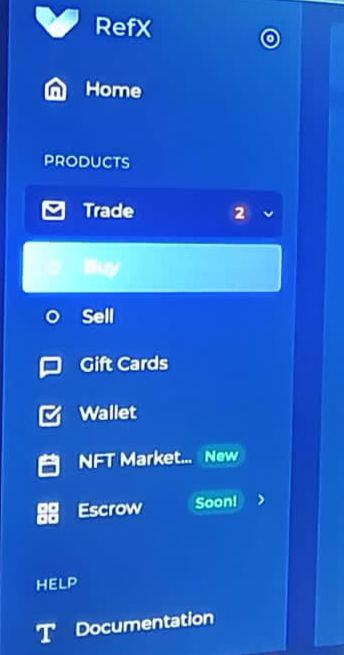
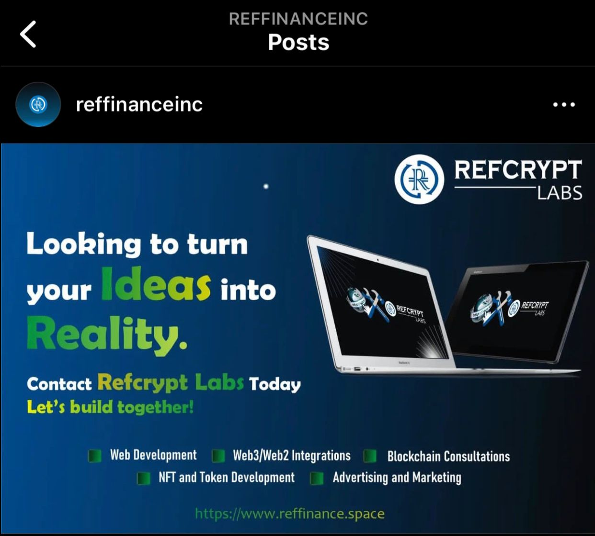
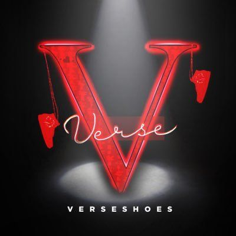
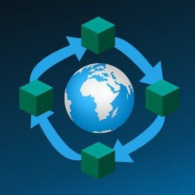
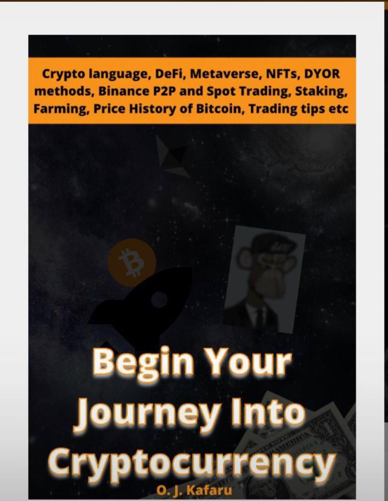
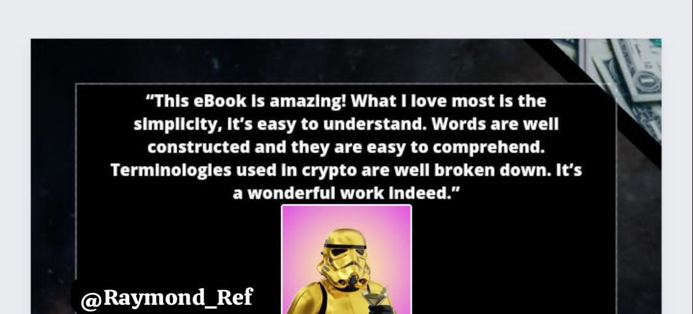

Resume
Professional Experience
I have a knack for flawlessly organizing events, adeptly managing financial complexities, expertly handling and nurturing community unity. My leadership skills and impeccable organizational abilities ensure that tasks are accomplished efficiently. I thrive as a team player and excel when working under guidance.
I'm connected with the like-minded pioneers who can provide crucial support to budding projects [@Reffinance x RefCryptLab]. My unwavering optimism fuels my drive, and I foresee that my skills will harmonize seamlessly with the team's unwavering commitment, driving our project toward prosperity and triumph.
Earned the runner-up spot in the 'LUST' edition of the Daily Writing Challenge 3.0, hosted by the esteemed publication , 'The Magazine We Write, You Read.'
Engaged as a contender in the ArtHum Poetry Contest, navigating the 2020 theme, 'Ray of Hope.'
The author behind the poignant poem titled, 'Rape', featured on the Ideemlawful blog in 2021.
Silent author of countless verses, weaving tales of both affection and anguish.
In addition to our RefCrypt Lab, our organization boost other departments that contribuute to our comprehensive ecosystem. We have Reflean, which serves as a platform for continuous education and learning. In which I and fellow enthusiasts are tutors.

We are also in the exciting building stage of Refx, the first charity crypto exchange. In here we do P2P where users can actually trade their coins/tokens to flat easily.
We have Reffinance Degen, our vibrant presence on WhatsApp and Twitter, where we actively share valuable cryptocurrency insights abd information to the benefit of our community members.

As the Chief Marketing Officer (CMO) at Reffinance Inc, I've been instrumental in securing a diverse range of weekly gigs for our team. These gigs encompass activities such as hosting meetups with foreign web3 projects, website development, graphic design, token creation, and marketing initiatives. These dynamic tasks are carried out within our innovative RefCrypt Lab.

I began my journey at the Vershoe community as a "verselist," a role I earned through my active participation. Afterword, I was promoted to a moderator thanks to a well-received thread I created about the projectand its utility. This thread sparked engagement, left a positive impression, and even attracted new members through personal invitations. The educational content I contributed about Verseshoe further solidified my role as an ambassador for the project. Eventually, I joined the project team, where I collaborated with others to discuss marketing strategies and drive the project's growth.
I embarked on my journey with Hoopasnft as an ambassadorship program. During my tenure, I recruited ethusiastic and dynamic ambassadors who joined forces with the team to promote the project. Within just a week, we established a strong community presence, and our Twitter engagement skyrocketed. We continuously attracted new members, and my ambassadorship efforts earned valuable spots for my community. I actively shared and invited people from diferent communities to explore and get involved in the project.

I'm part of Bitearthswap, a Multichain project that's redefining crypto trading by prioritizing trust, security, and empowerment over centralized exchanges. As a moderator and ambassador, I've collaborated with the team, and some of my ideas have put into action. This experience has convinced me that this project has tremendous potential. I also handle a lot of the content and writing, which the founder greatly appreciates. It's an exciting journey!
I've had the previledge of working in a variety of roles that have given me a wealth of experience. I've been a part of teams where I helped make important decisoins and plans. I've delved into the world of cryptocurrencies and finance, exploring how these digital assests work and how they can benefit people. Throughout my journey, I've always approach my work with an open mind, eager to learn and grow.

One of the most exciting parts of my experience with crypto was getting to review an important cryptopedia. I carefully examined the book, looking at how easy it was to understand,how much information it had, and whatever it was useful for both newcomers and experienced crypto fans. I wanted to make sure it was a valuable guide for anyone trying to learn about crypto.

Professional Services
I'm pleased to offer the following services to help you find the solutions you need. From initial ideation to the development process to finishing touches, I work with my clients closely each step of the way. Keep in mind that each service can be completely customized to your project and needs to ensure the most successful outcome.

Community Management
Excellent Results
Moderator
Practical Solutions
Consulting/Advisor
Satisfaction Guaranteed
Raymond Ref
@2023 raymond ref